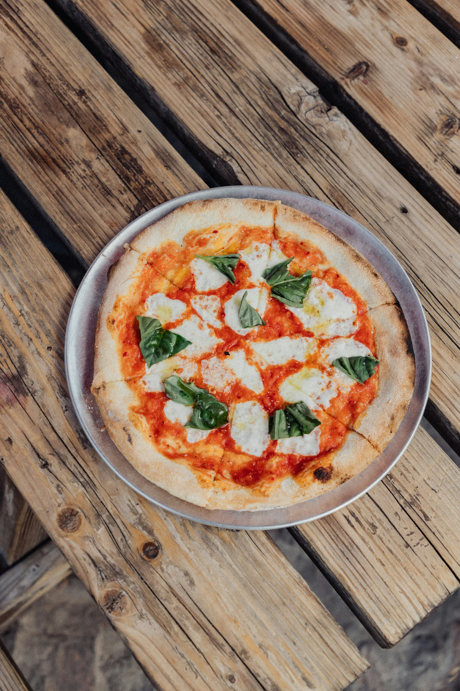

this is where it will take you when you choose a recipe on the recipe result page
it's going to have the name of the meal, the ingredients that you have, and instructions. You will also be able to favorite them

| Item | Quantity |
|---|---|
| All-purpose flour | 2 cups |
| Warm water | 3/4 cup |
| Yeast | 1 teaspoon |
| Salt | 1/2 teaspoon |
| Olive oil | 2 tablespoons |
| Crushed tomato sauce | 1 cup |
| Fresh mozzarella cheese | 8 oz |
| Fresh basil | 1/4 cup |
| Step | Instruction |
|---|---|
| 1 | Mix warm water, yeast, and a pinch of sugar. Let sit for 5 minutes until foamy. |
| 2 | In a large bowl, combine flour and salt. Add the yeast mixture and olive oil. |
| 3 | Knead the dough for 8-10 minutes until smooth and elastic. |
| 4 | Let dough rise in a greased bowl for 1-2 hours until doubled in size. |
| 5 | Preheat oven to 475°F (245°C). |
| 6 | Punch down dough and stretch into a pizza crust shape on a floured surface. |
| 7 | Place crust on a pizza pan or baking sheet. |
| 8 | Spread crushed tomato sauce evenly over the crust. |
| 9 | Tear fresh mozzarella and distribute over the sauce. |
| 10 | Bake for 12-15 minutes until crust is golden and cheese is melted. |
| 11 | Remove from oven and top with fresh basil. Drizzle with olive oil. |
| 12 | Let cool for 2 minutes, slice, and serve. |